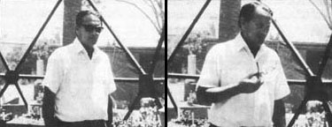
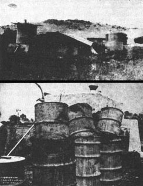
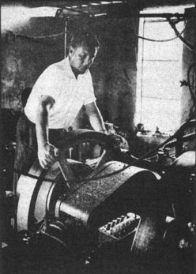
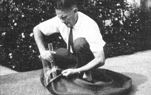

There lives in Santa Barbara, California a most interesting man. Because long before most of us even suspected that organic waste could be recycled into both high-quality fertilizer and a very low-pollution fuel, this fellow was experimenting with the idea. And long before many of us were even close to solving scum and pH and other anaerobic digester problems, this inventive cuss had singlehandedly and successfully figured out how to turn a very awkward mountain of pig manure into a most handy plant food and more than enough methane to drive a diesel engine day and night for a solid six years.
This unheralded genius is L. John Fry and his improved design for anaerobic digesters may someday be as famous as James Watt's steam engine. In the meantime we can personally vouch for the fact that L. John Fry is a genuine storehouse of information on the subject of recycling plant and animal waste directly into fertilizer and methane gas (a valuable skill indeed in these days of developing food and fuel shortages). He's also an all-round Good Guy who is most eager to transmit his knowledge to others ... as Cass Wester found out when she interviewed Mr. Fry in Santa Barbara.
PLOWBOY: Mr. Fry, how did you begin your involvement with methane production?
FRY: Well, I'm from Great Britain actually, and I was a pilot during the Second World War. After that I went to live in South Africa and was there a total of seventeen years. During that time I built up a farm from scratch.
PLOWBOY: This was your pig farm?
FRY: Yes. It took about five years to make the operation begin to pay. Then, when the enterprise started to become financially stable and I thought all my troubles were over, I found we had quite a problem on our hands ... and that problem was getting rid of manure. We had two tons-wet weight-a day to dispose of and, at that time, there was no official system" of using the material.
I tried composting the waste from our hogs and found that it involved an enormous amount of work ... four days labor a week. Then, as soon as we'd finished composting the manure, we had to put it out on the land ... spread it and dig it in. The wole thing became a very big do.
Along about that time I heard of experiments being done with methane digestion, but it was with chicken droppings and I didn't know if it would work with pig manure. So I went around to the local sewage works and talked to the engineers there and they said they thought it might work, but they weren't at all sure and that I'd have to bring them a specimen and they'd try it out.
PLOWBOY: Did you?
FRY: No, I just went ahead and tried it on my own. I built what we call a sump digester ... just a 55-gallon drum with a smaller drum turned upside down inside it. It was most effective and from that I made a whole range of calculations for, first of all, a medium-sized methane plant and, finally, a full-scale digester that would process all the manure on the farm.
PLOWBOY: Getting started with a whole new process of any kind is always the hardest part. Did you experience any unusual difficulties during the early stages of your research?
FRY: Curiously enough, one of the most difficult parts of all was determining the, exact amount of manure my farm produced each day. It sounds quite easy... but when you have a thousand pigs and something like six people cleaning sties, it's very hard to establish just how much manure you have.
We finally did it, in the end, with a tripod and spring scale. We weighed every wheelbarrow load and subtracted the weight of the barrow and averaged the approximately 26 loads of manure a day over a week and found that we had about two tons-or 1,350 pounds dry weight-of fresh waste a day. We had to reduce it to dry weight figures, of course, to determine digester capacity.
Once I had the calculations in hand I went to a local university and studied everything I could find on waste disposal in general and anaerobic digestion in particular. I also visited the local sewage works, where I learned a great deal more than I did at the university.
Eventually I got down to designing ... planning and drawing up our main plant. I didn't hurry this step too much. Rather, I spent about three months working out each portion in detail. I carefully calculated exactly what I was going to do and how I'd do it. Then I coordinated the whole thing into one master plan.
PLOWBOY: Did you have any mechanical or engineering experience to draw on while you were doing this design work?
FRY: No, but I did have some knowledge of construction because I had built all the sties on the farm and I had devised a number of cost-cutting ideas at that time. As a matter of fact, I'd like to apply some of those schemes to the construction industry right here in California. I think they'd apply and would allow the contractors who used them to fabricate buildings at less-than-current expense.
Anyway, I got down and built the whole unit and I must admit that it did take a little courage to spend $ 10,000 putting up a thing I couldn't be absolutely sure would work.
I remember that one of my closest friends came around to the farm one day and said, "Look, you know, it's a terrible shame to spend all that good money on this project and ... I mean, do you really think it will produce gas and all that?" And I said, "Oh yes, I'm quite sure it will" ... but I wasn't absolutely certain the digester would work. you know.
PLOWBOY: You must have been all but convinced, though....
FRY: I had a strong suspicion.
PLOWBOY:... convinced enough to include a diesel engine to run on the gas that you thought the digester would produce.
FRY: Well the engineroom was sort of an afterthought. It was the final touch to the whole thing. I actually got the digester in operation, I should think, by the end of 1957 ... and I started putting the engineroom together in 1958.
I bought that diesel powerplant-one of the old-fashioned, very slow-running kind with the big flywheels-in a scrap yard. It was all covered with rust and looked absolutely deplorable. We cleaned it up and got it into the engineroom and with a great deal of very involved mathematics, trued it up with a drive shaft that took the power off to all sorts of different areas on the farm ... for pumping water and generating electricity and so on.
One pump on the line circulated water between the engine and pipes inside the gas-producing tank so that the water which cooled the powerplant kept the digester warm while the digester provided the fuel that kept the engine running. This, of course, was a perfect cycle and a very efficient one.
PLOWBOY: How large was this engine?
FRY: Thirteen horsepower ... and it turned a 6-kilowatt electrical generator and did all manner of other work. This was a problem in itself, I should point out, because the engine had to be kept on a fairly heavy load-between 80 and 90 percent capacity-in order for it to run smoothly and evenly. The governor was a pretty complicated thing, believe me. It had an automobile shock absorber built into it so that it couldn't "hunt"-open and close suddenly-and by the time I finished it, it was a supreme mass of gadgetry. But it worked beautifully and the engine ran day and night for six years.
PLOWBOY: The unit ran continuously for six years?
FRY: Yes. Oh, we wore out the water pumps once or twice and had to replace them ... and the alternator we drove for a couple of years with another diesel gave me constant trouble because of the load it had to carry ... but the system actually worked very well. None of the breakdowns were connected, in any way, with the fact that we were powering the engines with methane. Except for the spark plugs-and that was the one thing that was rather peculiar-we found that we had to set a very small gap indeed on the spark.
PLOWBOY: But didn't you have any corrosion problems? I've heard that the hydrogen sulfide in homemade methane can really eat up the metal in digester tanks. I've also been told that this H2S will ruin an engine if it isn't filtered out of the gas before the methane is used as fuel.
FRY: Well, let me answer that by first describing the manner in which we fed methane to the engines. I actually used the vapor in two ways. For the smaller diesel I just led gas into the powerplant's air intake and, by a series of careful measurements, I found I could run the engine fully loaded on a mixture of 87 percent methane and 13 percent diesel fuel. We ran it that way for a couple of years and it used so little diesel fuel that it was unbelievable. We practically never topped up the tank.
Now, the larger diesel was run on straight methane. When I bought it in that scrap yard it didn't have a fuel pump or injector nozzle and the man there told me I was wasting my money. "By the time you've gotten all that extra gear," he said, "you might as well have bought the thing new." I said, "Well, look. I don't need all that because I'm going to run this diesel with a spark plug." And he said, "You must really be out of your mind. You can't do it." I said, "No. You don't understand. I'm not going to use ordinary fuel. I'm going to operate the engine on methane made from pig manure." And he said, "Well, good luck-very good luck-to you." He obviously didn't believe me.
Anyway, we did run the diesel on straight methane. I had a bit of a battle with it at first and I bought some methanol at one stage and poured it into the air intake, but that proved quite unnecessary. I found that you can start a methane-fueled diesel powerplant-without any sort of choking action-no matter how cold the weather.
What we did was to simply pipe gas out of the digester at an indicated pressure of six inches on a water gauge. This is quite a way under one-half pound to the square inch. We led the methane into a series of gas holders-each of which held about 300 cubic feet-and then straight into the engine through a valve in the powerplant's air intake. That was all.
I had heard about this H2S problem, of course, and I did try putting the gas through a drum filled with iron filings-which are supposed to absorb the hydrogen sulfide-but that was only a short-term experiment and, frankly, I don't think it made any difference at all. I also attempted to dry the methane by passing it through wood shavings and I couldn't see that that made any difference either.
For six years, then, we ran our big diesel on straight methane just as it came from the digester-with no special compressing and no filtering-and I don't believe that it ever harmed the engine in any way. Nor do I think the methane corroded the digestion tanks or plumbing. In fact, the main units were constructed of just 24-gauge steel-very thin metal-and the only place where I noted any corrosion was the line-the high - water mark - where the slurry and air met inside the tanks ... and that had nothing to do with the methane.
PLOWBOY: It certainly sounds as if your use of methane was a complete success ... but what about the production of that fuel? Was it messy or smelly in any way?
FRY: No, not at all. Quite the contrary. We made a basin about eight by twelve feet and two feet deep. It had a tiled edge around its top - rather like a toilet bowl, in fact-so that as manure was tipped in, the waste couldn't slop and splash back out. When the 26 wheelbarrow loads had been put in each day, we added - I suppose - 150 to 200 gallons of water. Then we mixed the manure and water into a slurry and used an ordinary garden rake to skim off all the straw and alfalfa and other things that hadn't gone through the pigs.
At that point a man pressed a button on an electric pump and the whole mess just whooshed down through an enormously strong steel grid, through a sand trap and into the methane plant. As the last bit went down the drain, a hose was turned on and everything was washed down and left spotless. There were no smells, no odors and no flies.
The fly eggs that were already in the manure, you see, would go into the plant and that was the end of them. It was really remarkable, actually, how the fly menace cleared up on the farm over a period of a few months. There were practically no flies left.
The whole place cleared up, in fact. The stench from the compost was gone, there was no more dust or dirt flying around, reinfestation of roundworms stopped altogether and the pigs were certainly healthier.
PLOWBOY: That sounds too good to be true.
FRY: The farm became quite a showplace and drew literally hundreds of visitors every year. My original idea was to charge a 50 cents admission fee and I'm sorry I didn't keep to that notion because I could have made a lot of money.
PLOWBOY: Did your work generate any interest outside South Africa?
FRY: Oh yes, I had inquiries all the way from Australia and the United States.
PLOWBOY: How did people here find out about you?
FRY: My operation was written up in a local South African farmers' weekly and the National Hog Farmer reprinted the article here in the States. I didn't even know the U.S. publication had run the piece until I got a batch of mail about a foot thick - some of it with return postage - from all over this country ... and that caused me to do a singularly inept and stupid thing.
PLOWBOY: What was that?
FRY: Instead of answering the letters, I grabbed money that I should have used for pig feed and I came to the United States and bought a ramshackle car for a hundred dollars and I got a large map and put pins in it to represent all the people who had written me and I went and visited them one after the other. This was, of course, very foolish because not one of those good people was in a position where he could use a methane plant, let alone get the whole idea moving over here. This was in 1961 and I spent five weeks running down one blind lead after another before I finally sold the car and went back home.
PLOWBOY: That must have been very frustrating.
FRY: Quite. But it was far from the last time my enthusiasm for methane plants has run away with me. On my way back to South Africa, for instance, I learned that a United Nations conference on new sources of energy would soon be held in Italy. So I marched straight into the U.N. headquarters in Rome and found the chairman of the affair and told him of my successful experiments and offered to deliver a free lecture to the assembled delegates.
PLOWBOY: And?
FRY: And he said, "Well, look, buddy ... if you had submitted your ideas nine months ago, we might have considered them. But you have to have a written paper on the concept. You can't just walk in here and give a speech."
So I dashed back to South Africa and wrote up a terrific report and had 60 copies - beautifully typed - whipped out in twenty-four hours flat and handed the whole stack to a South African delegate who was going to the conference. When he returned, he told me that he had delivered the papers directly to the U.N. headquarters. So I wrote them three months later and they said, "Yes, we still have all 60 copies." They had pigeonholed them and never given them to anyone.
PLOWBOY: You must have felt like a prophet without honor in ....
FRY: In my own home country, actually ... because in 1963 I demonstrated a generator on behalf of a British company at the Royal Agricultural Show in England. I'm afraid it wasn't a very good demonstration, though. Despite the fact that I had written the corporation four or five letters stating it would take me at least two weeks to put the finished digester into operation after it was assembled, the people in charge took no notice. They just gave me a flat 12 days to both set up the digester and put it into production. To add insult to injury, the unit they handed me wasn't even of my own design.
PLOWBOY: What happened?
FRY: We did get the unit to go for the show but it only produced about one or two percent of the gas that it should have made ... and a very poor gas at that. Still, the unit drew tremendous interest. I especially remember one oldish couple who drove 200 miles from Wales to see the digester. Interest was very sharp indeed. So much so that, once again, I felt sure the time had come to introduce methane production to the world. I thought that all I'd have to do would be to go back to South Africa, sell out, set up a digester manufacturing facility in England and I'd be on my way.
Well that didn't work so well either. We - a family of five - uprooted ourselves after 17 years on the farm and just about got our money back and that was all. I then spent five months building and operating a methane composter on a pig farm in England and it worked just as it was supposed to ... but the review board of the corporation that owned the operation decided they didn't want to produce and use the gas after all. That left us sort of stranded, of course, so we moved to the United States in late 1964 and finally settled here in Santa Barbara during January of 1965.
PLOWBOY: I assume that you continued to experiment with digester design once you arrived in California?
FRY: Not nearly as much as I would have liked. I've been sort of dogged by heart trouble since we got here and that has slowed me down quite a bit. I did put out a rather crude circular about my work but I didn't really send it to the people I should have. It's only been since I've been discovered by some of the local environmental organizations that I've kind of gotten my hand back in in a meaningful way.
Richard Merrill and his wife have been especially helpful. Rich learned of my work when he was with the Santa Barbara Ecology Center about three years ago. Then he joined the New Alchemists and convinced them to finance some of my experiments. That support has now been withdrawn - the New Alchemists really don't have a lot of money to work with - but Rich has continued to help me design, set up and test methane composters of various sizes.
PLOWBOY: Can you tell me anything about this work?
FRY: Well there's the very small unit I designed for VITA, Volunteers for International Technical Assistance. The group came to me and said, "Your methane idea is fine ... but couldn't you do something with materials that any Asiatic person can find in quantity?"
I thought of goatskins and various things and finally struck on the idea of making a small composting unit from a truck inner tube. I devised a plastic insert that is shaped in a certain fashion and which has an inlet tube and an outlet. If you cut one of the truck tubes and insert this modification, you can mix one shovel of manure - animal or human - with a bucket of water, gravity feed the slurry into the unit ... and produce enough gas in a day's time to cook a meal.
Now if you think of that in terms of the vast areas of the world where people forage for little sticks and twigs and carry them for miles, just to cook a meal ... you can see what a valuable bit of technology this might be. Apart from anything else, these people are so desperate for fuel that they denude the soil of the last fragments of vegetation that could rot down and rebuild their earth. In fact, manure itself is burnt ... and one side effect of that is the smoke from the dung. This smoke is very harmful to the eyes and people often go blind because of these fires, in addition to losing the total value of the manure.
PLOWBOY: Composting the droppings into methane and then burning the gas, I assume, would help to solve these problems.
FRY: Most certainly. With a simple digester, the same individuals could produce and burn nothing but the methane. What would probably be far more significant to them in the long run, however, is the fact that they'd have to get rid of the composted effluent somehow - once all the gas had been extracted - and they'd probably just drop it on the ground. And anyplace they dropped it, of course, plants which had been struggling along in a miserable fashion should start growing magnificently. Inevitably, these people will get around to using the effluent on their vegetable patches and they'll get better and better crops.
PLOWBOY: Do you have other experiments underway at this time?
FRY: Yes, we've set up three separate sump digesters made from 55-gallon drums. We're trying chicken droppings in one, dried steer manure - the kind you buy in a paper sack from garden supply stores - in the second and pig manure in the third. They're working quite well and we're comparing the output of the three units.
We've tried loading a generator with cactus juice, too, with very good effect - it produces a lot of gas - and Rich wants to try kelp. Seaweed, you know, contains none of the lignin that land plants need to hold them up. It should break down very rapidly and - because of the trace elements and minerals it contains - should produce some pretty good sludge.
PLOWBOY: I can definitely see the value of this work ... but I would think that after running diesel engines day and night for six years on the waste of 1,000 hogs ... well, wouldn't you really prefer to be designing and building much larger digesters?
FRY: Oh that's the next step I should think ... we've already been asked to consider the construction of 40-to-50,000-gallon composting units for installation on some livestock and poultry farms in this part of the country.
PLOWBOY: Let's assume that you build one of these big units. How long would you have to test it before you'd feel safe in advising others that the design was good enough to duplicate on a wide scale? How soon after a pilot plant is put into operation, in other words, can we begin installing tested and proven digesters of this size on other farms?
FRY: That ... I hadn't thought of, really. I suppose we could get facts and figures as we went along, but it's ... with a unit of that size -40-or-50,000 gallons - I shouldn't think we'd get any conclusive results within a year or so. It would take quite a time to evaluate the flow of waste through the digester and compile absolutely accurate measurements. There's no question that the composter would work, of course ... but to write a definitive report on its operation, you'd have to sample and test and weigh and measure and analyze for a year or more.
PLOWBOY: Would it be more difficult to start up a 50,000-gallon unit than, say, your inner tube model or a digester made from 55-gallon drums?
FRY: No, but you must remember that it always seems to take a disappointingly long time for any unit - even a 55-gallon model - to begin producing gas. You mix your manure and water into a slurry and pour it into the tank and you wait and wait and you wonder if this whole thing isn't just a complete farce. Will it ever work? And then one fine day-usually within two or three weeks - you look at your collecting tank and you see that it's been pushed way up in the air by the gas inside! And you put a dowel rod or a stethoscope against the main chamber and you can hear the bubbling and gurgling going on inside and there's no question ... you really know that something's taking place in there.
PLOWBOY: Thanks partly to you and partly to Ram Bux Singh in India, MOTHER's methane digester is now producing a heavy flow of gas. We've set up a burner and fried eggs on it, as a matter of fact, and we're getting ready to put the fuel to more practical use. The point is that we now know -firsthand - that this thing really does work. We also know -firsthand-just how lonesome you can feel when you set up that first tank of waste and you wait a week or more for the start of gas production. Do you have any other reassurances or helpful hints for individuals who are just getting into this form of recycling?
FRY: Well I have to say that - while I admire Ram Bux Singh's work greatly and I have only the highest respect for his experiments and results - I have seen a few beginners become somewhat confused by Singh's writings on the subject.
In particular, it seems that neophytes have some difficulty understanding the ratio of 30 parts carbon to one part nitrogen with which Singh recommends that a generator be loaded. I've found that the simplest and easiest way to charge a digestion tank - at least in the beginning - is to fin it with nothing but pure manure and water. Mix the two together until you've formed a slurry that has the consistency of cream and put the liquid in your plant. That's all there is to it. Within two - or at most, three - weeks you should have gas. Just dump off the first couple of tanks to get rid of the oxygen and carbon dioxide and you should then collect a good flow of usable methane ... assuming, of course, you hold the temperature of the slurry above 800F.
PLOWBOY: Yes, our experiments have shown temperature to be quite important.
FRY: The anaerobic bacteria that produce methane are happiest at about 950F. Their activity decreases by only 10% if you drop their environment to 800 ... but it falls off by 50% at 600. Since our ambient temperatures range between 60 and 800 in most of the inhabited areas of this country, some sort of heating or slight warming should be applied to any digester designed for maximum production. We've found that a heat engine - gasoline, diesel, whatever - is about as efficient for this purpose as a water heater. If you plan to drive a stationary powerplant with the gas you're making, then, it makes very good sense to simply put the bio-gas into the engine (thereby eliminating the need for a compressor) and run the waste heat from the engine back into the digester.
PLOWBOY: That's a very neat arrangement for stationary applications, but what about using methane to power something like a car or truck?
FRY: Well of course, the vapor has been used that way - during World War II, for instance, and currently on at least a demonstration basis by Harold Bate in England - but this most certainly does not seem to be the most practical application of the fuel. Methane, you know, is the lightest of the organic gases and it takes a pressure of nearly 5,000 pounds per square inch to liquify it for compact storage. If we only compress the vapor to 1,000 psi, we find that it takes something like 1,320 British thermal units of energy to put 6,350 B.t.u. of usable "work" into a storage bottle. It may well be a better idea to bum the methane in a diesel engine near the digester, use the powerplant to drive an electrical generator, charge batteries with the output and run cars, tractors and trucks off the batteries.
PLOWBOY: Most of the people in the U.S. who theorize about anaerobic digestion seem to concentrate almost entirely on the idea of methane gas production ... possibly because of the current pinch in gasoline supplies and the shortage of heating oil forecast for the coming winter. Actually, however, methane is only one by-product of the process ... and not the major one at that. Can you tell me more about the others?
FRY: Yes. In addition to the gas - which bubbles off the top of digesting waste - a certain amount of sand and inorganic material always seems to settle in the bottom of a digestion tank. If this matter is allowed to build up too thickly it can hamper the operation of the unit ... so I like to filter it out of the raw sewage, if at all possible, before the waste is run into the digester.
Next up from the bottom is the sludge. This is the approximately 40% of the original solids left over after digestion and just above the sludge we find the spent liquid - supernatant - that remains from the original slurry. Both the digested solids and the supernatant make an excellent fertilizer for crops and pond cultures.
Floating on top of the supernatant is a built-up scummy mixture of all the coarse, fibrous material released from the raw manure. In moderate amounts this scum can act as an insulation but greater quantities of the matter will virtually shut down a digester. This is the main reason I advise beginners to fill their units - as nearly as possible - with a mixture of just pure manure and water. An unseen by-product of anaerobic digestion, of course - at least the way I set it up in South Africa - was the saving of time and labor I realized in the handling of the manure.
PLOWBOY: What does all this translate to in dollars and cents?
FRY: The installation of my South African displacement digester cost me about $10,000, and the unit produced an, average of 8,000 cubic feet of gas a day. The heat value of that gas at the farm's altitude of 5,500 feet above sea level was 585 B.t.u. per cubic foot. Translated into present Santa Barbara prices for natural gas, this amounts to $7.57 per day or $16,578 over the six years that I operated the unit. Not that I used all that methane ... the tank was bubbling all the time and gas was going out into the atmosphere constantly. You could hear the action in the inner tank from a hundred yards away.
At any rate, the gas alone must have paid for my installation in three or four years. I would say the digester saved me far more than that in labor and that I realized an even greater return again in the fertilizing value of the effluent I returned to the soil.
PLOWBOY: Although the gas alone more than paid for the digester over a six-year period, you feel certain that the labor you saved and the sludge and supernatant which came from the unit were even more valuable.
FRY: Yes.
PLOWBOY: You just mentioned that your big South African digester was a "displacement" unit ... and you've called other plants "sump" designs. What do these terms mean?
FRY: I refer to the vertical digester - the inverted gas-collector tank inside an upright tank commonly used as a bio-gas plant in India-as a sump digester. My first experiments were with such units and I've learned a lot from them. Unfortunately, such a design can suffer quite severely from buildups of sand and other inorganic matter in the bottom of the main tank and scum on top of the decomposing waste. Due to the nature of the anaerobic process - which will often vigorously shove digesting waste up and down inside the main chamber - it's very easy for unprocessed material to find its way into the outlet pipe of a continuous-feed sump digester long before it should. This is both wasteful and unsanitary.
Accordingly, I've developed - and this is probably my major contribution to the furtherance of the anaerobic process - a digestion unit of horizontal design. I call it the displacement digester because the decomposing waste inside such a long, flat tank can only be moved along toward the outlet as it is displaced by fresh sewage introduced through the filler pipe on one end. I find the design much more troublefree than a vertical sump digester.
PLOWBOY: Mr. Fry, you've told the beginners in our audience the easiest way in which to start processing their first batch of waste through a digester. Do you have any comparable tips for the fellow who's been having great luck with an anaerobic plant for a year or two ... and then suddenly finds that the process has quit working for some reason?
FRY: Yes. Well, first of all, bear in mind that any container or tank or vat will work as a digester after a fashion. I mean, you can dig a hole in the ground and put a slab of concrete over it and it will work ... at least in the beginning. But what we want is a unit that will go on working year after year with an absolute minimum of difficulty and maintenance.
I'd advise your readers, therefore, to explore the benefits of the displacement design before they construct a digester. That will head off many later problems right there. Then make sure that the least possible amount of inorganic matter and scummy material is introduced into the plant whenever it's loaded. You should also plan to empty the digestion tank, clean it and start over at any time sand starts to build up in its bottom or the scum on top becomes a foot thick.
Remember, too, at all times that the ordinary cycling time for most organic waste processed at 950 is 30-35 days. You've got to leave it in the tank at least 30 days in order to get full maturity out of the decomposition. Remember also, though, that the material is actually only 70% digested at the end of this period. The other 30% of gas production, however, isn't worth keeping the waste in the plant.
In other words, don't try to push your material through the digester too fast nor allow it to stay there an indefinite amount of time. Think of the bacteria as a great, massive brew that must be enriched at regular intervals but not constantly battered with massive injections of fresh acid-laden manure. Fit your schedule to the preferred schedule of the anaerobic bacteria and they'll reward you quite properly. If you become lax in feeding the little creatures, on the other hand, their production will fall off ... and if you try to rush them too much you'll run the risk of upsetting the pH balance in the whole tank.
I had this happen once, by the way, and I couldn't do anything but sit and wait for three months until the condition righted itself. Luckily, someone quite recently discovered that a little ammonia can raise the pH value of a tankful of manure very fast. Just pour a little into your digester's inlet pipe and everything should be back to normal within hours.
PLOWBOY: I think it's only fair to tell our readers that there are many more tips of this nature, plus a very understandable explanation of the anaerobic process, plus a more detailed account of your South African and other experiments in a 48-page booklet that you and Richard Merrill have written.
FRY: Yes, the booklet - we call it a newsletter - was issued by the New Alchemists in the spring of this year and it contains a great deal of information about anaerobic digestion. Rich and I are currently expanding the publication into a full-fledged book which will be available a little later ... but, for now at least, many people tell us they feel that the newsletter is the most concise and valuable piece of literature in the field.
PLOWBOY: There's no question that you're one of the most knowledgeable individuals in the world on the subject of small-scale anaerobic waste recycling ... and I'd like to ask you what future you see for the process.
FRY: Well Rich and I feel that anaerobic digestion is, quite possibly, the only natural process that hasn't been really exploited ... really integrated into the synergy of our society. Instead of admitting that the cycle of life is a cycle, you know, and that the decomposition of old life is a prerequisite for the building of new ... we've traditionally pretended that the whole bottom half of the circle just somehow doesn't exist.
But it does exist and I find it tremendously exciting to reach halfway around the cycle of life to bottom dead center, so to speak, and use what I find there to literally construct new life and energy.
As others learn that this is possible, I think we'll all have our eyes opened to still unseen possibilities. We'll learn to value this natural and largely untapped resource enough to go far beyond just putting raw sewage into a tank and taking out fertilizer and fuel. We'll think about designing a homestead so that its livestock can run free ... yet the animals' manure will be easily collectable for composting. Maybe we'll incorporate a pond into every small farm, dump sludge from the digested waste into the water, grow algae and grass on that and feed the resulting lush growth to chickens or pigs or other animals. Or maybe we'll let the algae support this little creature which will feed that one and so on right up through the chain of life to fish that we ourselves can eat ... change waste very efficiently into protein, in other words.
If this were done on a large scale and we wanted to scrub all the methane our digesters produced and free the gas of CO2 ... we could do it by bubbling the bio-gas through water. Just bubble the methane through water and the carbon dioxide will go into solution. Great. We've done what we wanted to do. Interestingly enough, however, we've done something else. Plants, you know, thrive on CO2 and the algae growing in that water should be even more productive than ordinary. The cycle, you see, is again complete.
The possibilities are endless and, at least to me, endlessly fascinating. I haven't been able to drop the subject of anaerobic digestion for 15 years now, despite heart attacks and various other setbacks that have nearly brought me to my knees. I'm convinced the process holds a very important key to our future.
|
 Digester with storage tank in background. Original sump digester. Upper drums have been force up by methane gas . |
 13 h.p. diesel engine converted to run on methane gas. |
 |
|
 |
|
|